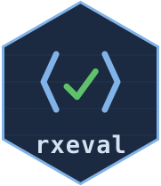

Will this form mean the same thing on a tablet and in a browser?
Source:R/rxeval.R
form_portability.RdThe two engines the ODK ecosystem runs on implement different languages: JavaRosa inside Collect and KoboCollect, Enketo inside web forms. Neither is a superset of the other, and the gaps do not announce themselves — an expression Collect cannot evaluate usually yields nothing rather than an error, so the form fills in, the interview finishes, and a column comes back empty.
Value
A data frame with one row per issue. breaks says which side
stumbles: "Collect / KoboCollect", "Enketo web forms", or
"both, differently" — the last being the worst, since nothing fails
anywhere. suggestion is a rewrite that means one thing in both, or
NA when there is none to give. Zero rows means the form travels.
Details
Every rule behind this was found by putting the same expression to both engines and reading the two answers.
Examples
if (FALSE) { # \dontrun{
issues <- form_portability("survey.xml")
issues[issues$breaks == "both, differently", c("path", "says")]
} # }